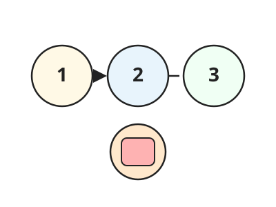
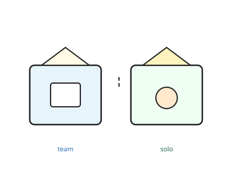
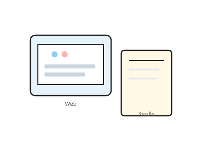
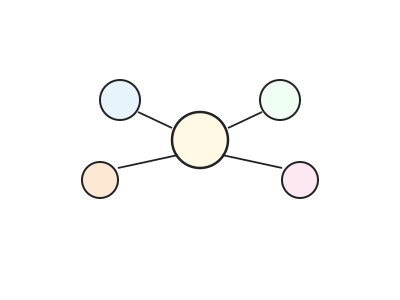
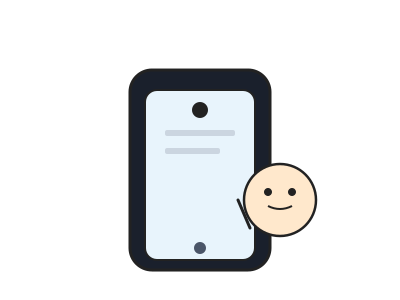
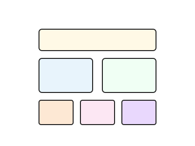
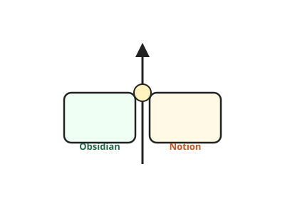
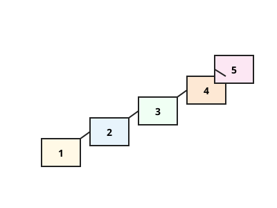

知識管理ツールの使い分けと始め方
2026年2月 松野
Cursorが「AIで作業する」ツールなら、
Obsidianは「知識を見る・整理する」ツール
ダウンロード：https://obsidian.md
| ツール | 役割 | 特徴 |
|---|---|---|
| Google Drive 共有フォルダ | 全員の共通の場所（正本） | ブラウザで誰でもアクセス可能 |
| Cursor | AIを使って作業する | 編集・自動化・AI活用 |
| Obsidian | 知識を見る・つなげる・集める | 閲覧・整理・収集（無料） |
| Notion | チームで管理する・共有する | タスク管理・議事録・外部共有（有料機能あり） |
目的に応じて使い分ける。すべてを使う必要はありません。

特別な設定は不要。開くだけで使えます。

左下のVault名をクリック → Vault一覧から切り替え

Cursorにはない「情報収集の入り口」としての役割
日々の学び + Webクリップ + 読書メモ → すべて1箇所に蓄積


Cursor にはモバイルエージェントもあるが、1回しかコマンドを送れない。
Obsidian は iPhone アプリで日常的に使える。
外出先でもメモを追記したり、保存した情報をすぐ確認できる
補足：iPhone で見るにはプラグインなどの拡張が必要です。Remotely Save というプラグインなら無料で同期できます。ほかに、有料の公式サービス（Obsidian Sync）で同期する方法もあります。

| プラン | 月額（年払い） | 主な特徴 |
|---|---|---|
| フリー | 無料 | 個人利用は制限なし。チーム利用は制限あり。AI不可 |
| プラス | 1,650円/人 | ゲスト100名。チーム本格利用向け。AI不可 |
| ビジネス | 3,150円/人 | Notion AI利用可（議事録自動作成・要約など） |
例: 3人でプラスプラン → 月額 約4,950円（年払い）

まずはObsidianで共有フォルダを開くところから始めてみよう
（Obsidianは無料で使えます）

| やること | 難易度 | |
|---|---|---|
| Step 1 | 共有フォルダをObsidianで開いて閲覧するだけでOK | ★☆☆ |
| Step 2 | 個人用Vaultを作って、自分の学びメモを書いてみる | ★☆☆ |
| Step 3 | Web ClipperやKindle連携で外部情報も取り込む | ★★☆ |
| Step 4 | タスク管理や議事録が必要ならNotionも検討する | ★★☆ |
| Step 5 | Cursorを使える人はObsidian + Cursorで「第二の脳」を構築 | ★★★ |
まずはStep 1から気軽に始めてみてください！